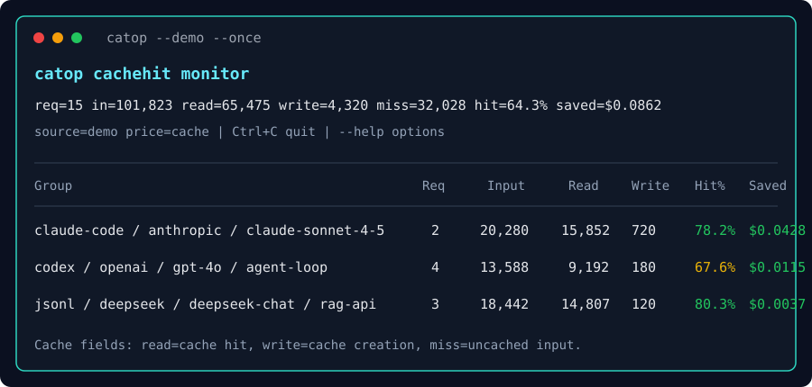
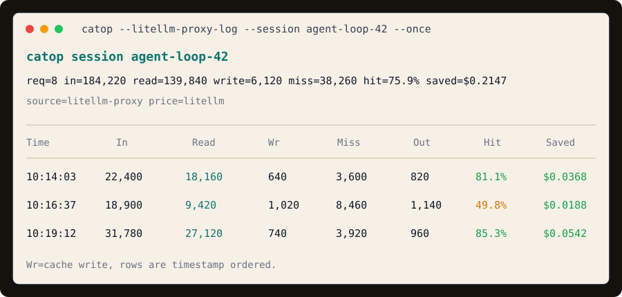
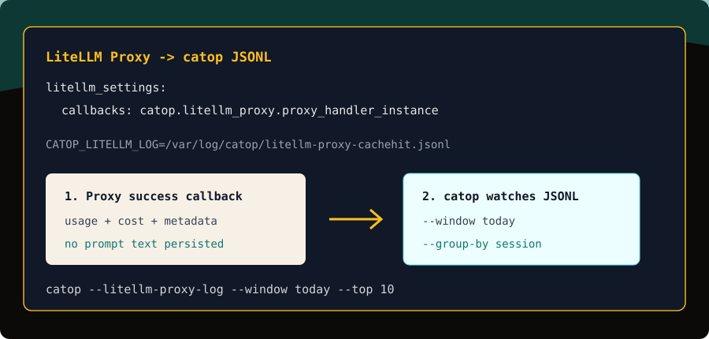

Input tokens served from provider-side cache.
Cache hits, cache misses, cache writes, saved USD.
Watch one thing deeply: LLM prompt-cache efficiency.
`catop` is a compact terminal monitor for teams running coding agents, RAG loops, eval runners, and LiteLLM Proxy traffic.
The first screen is the product
Every number answers a cache question.
Input tokens that created or refreshed cache entries.
Tokens that did not benefit from cache pricing.
Calculated from the LiteLLM model price map.
Install, point, watch
Run from source or from GitHub.
python -m pip install "catop @ git+https://github.com/Harzva/catop-cachehit.git"
catop --demo --once
catop --scan-agents --window today
catop --litellm-proxy-log --group-by session
Scope stays narrow.
`catop` is not a tracing platform. It is a cache-hit monitor that keeps read/write/miss/savings visible while agents are running.
Real data sources
LiteLLM Proxy, Claude Code, Codex, and JSONL.
LiteLLM Proxy callback
Writes successful request usage to JSONL without storing prompts.
Local coding agents
Scans Claude Code and Codex session stores when token usage is present.
Provider pricing
Uses LiteLLM's price map with a local TTL cache and offline fallbacks.
Screenshots
Dense terminal views, not a dashboard maze.


